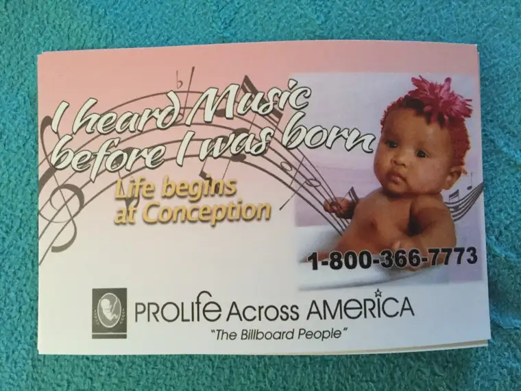

Normally, I don’t turn my video camera on at the sidewalk. It seems invasive to me. I have taken photos there before, to document what is going on there on a given day, to report back to those who are praying for us, to have a record of what we’re doing, and why.
But videos? Not usually. Only on rare occasions when it seems called for somehow. Today, it seemed justified. Because as I neared the portion of the sidewalk close to the entrance of the Red River Women’s Clinic at one point on my watch, I found myself in a “death stare” with one of the escorts.
I missed the verbal scuffle that had happened earlier in the morning, apparently, but when I arrived, there was a sternness about him that isn’t always there. Usually, he’s jovial, despite the nature of the business at hand. I later found out things had not gone well in the earlier hour and that’s unfortunate. It’s always better when we can at least be cordial to one another. But, there he was, staring down hard at me, so I stared up at him, just inches from his face, wondering…what’s behind the scowl?
His eyes seethed with hate. Why? What is his story? I want to know. Our stories have value, and help us understand one another. And somewhere in there, there is a little boy…
It was in the middle of this death stare, and my asking him out loud some of the questions on my heart, when the director of the facility emerged bearing her camera phone. She proceeded to hold it there in front of me, turned at me. She called me by name, scolding me for my intimidating actions — yes, all this while I am looking up at this much-taller-than-me, much-stronger-than-me, much-more-intimidating-than-me man with hatred in his eyes. And so I did what seemed right and pulled out my camera video for a few moments, too.
https://www.youtube.com/watch?v=LNpc8uDk9y4
So there we were, for those few moments, the director, the escort, and me. And who am I but a mother who has come here on a summer day with a few of her children; kids whose humanity has never been in question, thankfully. This is why I come. Because I have experienced the breathing and budding of life and I know that they are not just a clump of cells that become a human being later, but they are human beings from the start, who come into our lives to be loved and teach us to love. I can’t think of another more worthy reason for anyone’s existence.
I am not very tall, or intimidating, I don’t think. I would hope that on some level, the women might find me approachable. And the little cards I handed a few of them today? I don’t see them as intimidating, either. Do you?

But our presence doesn’t make for an easy business I suppose, and that’s what this is — a business. And there’s just this one day, really, to get the clients in and out, and time is ticking, and people like me? We’re in the way.
I find this interesting, because often our efforts seem pretty futile. And yet on occasion, like a few weeks back, someone turns away because we are here. “There is someone here and they are trying to help me,” she said into her phone. She was looking for an out, and when she saw us, she saw the out. This was not us forcing her. This was her knowing, and us just voicing it back to her — similar to the story Ramona Trevino tells in her book “Redeemed by Grace: A Catholic Woman’s Journey to Planned Parenthood and Back.”
The women who are going to turn away likely already have it on their hearts. We’re here to lead them away when they come looking for that out because they need the extra strength. That’s why we come…just in case. Because a whole lifetime of showing up is worth one single life.
But I can’t help but wonder, days like today…what if we could really talk to them? I mean really talk to them? What if, on abortion day, or even before then, rather than watching these young mothers scurry with fear in their eyes into a place that will forever separate them from their children here on earth, we could have a chance to have a real conversation? One that feels safe to them, where they feel protected and loved? What if we could gently lead them down all the worst-case scenarios and what ifs — as we would our own daughters — and help them see that with a circle of love around them, they could make a choice they wouldn’t regret?
And what if the escorts, instead of standing in our way to prevent us from sharing one last word of hope before theses young ladies enter the facility — a place where tools with blades and suction machines and dangerous pills that cause the body to do the opposite of what it’s meant to be doing — they would let us have just a little time with the women, to make sure they really know what’s about to take place? What if they let us offer the brochures so the women could really consider all the options? What if the choice, the empowerment, the compassion they claim to give could really happen because our voices, our perspective, would be part of the equation, too? What if ALL the truth were put out there, not just that which seems to satisfy the fear of the moment? The one with profit attached? The one that requires doctors who took the Hippocratic Oath to turn their backs on their word by taking life?
I know it’s happened somewhere, at some time, and when it has, it’s made a difference. But here in Fargo, on any given Wednesday on the sidewalk in front of our state’s only abortion facility, free speech, truth and real love are all squelched.
Those who come to pray are called protesters. And our presence there indicates we are protesting something, but not what many of the women are led to believe. We are not protesting them. We are not even protesting or judging their decision. We’re protesting the culture that has led them there, and keeps allowing it, and refuses to come up with something more creative and loving to deal with the reality of unplanned pregnancy.
We’re protesting the lack of our being honest with these women. And the reality that we’re actually telling them that the easiest way to make someone whose presence inconveniences us is to just get rid of them.
That’s what happened in Orlando recently. These certain people didn’t care for a certain other kind of people, so they hatched a plan to get rid of a bunch of them. Isn’t that what abortion is saying, too? That violence is the answer? Of course when Orlando happened, we all cried. And yet, just as many babies die violently here on our sidewalk each month as the number that died there that horrible night. The whole world watched and wept at Orlando, as we should have. But here? We look the other way. Cash the check. Deflect the travesty of the situation onto the “protesters” who are trying to utter a word of hope as a last-ditch effort.
Yes, we know our efforts on the sidewalk are last ditch. We know many conversations have happened before that were first ditch, and second, and third and fourth, and that this decision happens only after the woman has cried a million tears and looked down every path of hope and found the door leading to it closed. We came too late, most often, but not always.
Our presence means something, to someone. And so we will keep coming, and hoping that the other conversations happen sooner, and with more love and tenderness, and that the women don’t ever make it to us, because someone before us spoke words of life and hope into them days ago and it changed everything. Because I have yet to hear from a woman who thought about abortion, changed her mind, and regretted THAT decision. It just doesn’t happen.
But along with, I want it known that we hope, too, that the workers will somehow find peace, and be released from the chains of anger, hatred and misunderstanding that cloud their vision, which has them seeing us as the aggressors.
Tonight is my hour of concentrated prayer. I will pray for the women who went in that facility today. But I also will be praying for Tammi, the facility director, and Warren, the escort. I wish them peace, serenity, love, contentment, and abiding joy. I know just where they can find it, and I pray they will look in that direction. It is within reach. And they deserve it too. Jesus didn’t come for only some of us, but for every last one. We are all sinners, all needing his love and grace.
Peace be to them, and to all who pray for us, and support us in other, quiet ways. May love prevail and melt all the hurt and anger that comes to the sidewalk each week.
[UPDATE: A continuation of this piece has been posted after a misleading and erroneous Facebook post was published the same day this event happened: http://roxanesalonen.com/2016/06/looking-at-the-sidewalk-sideways/]
Q4U: Who will you pray for today?